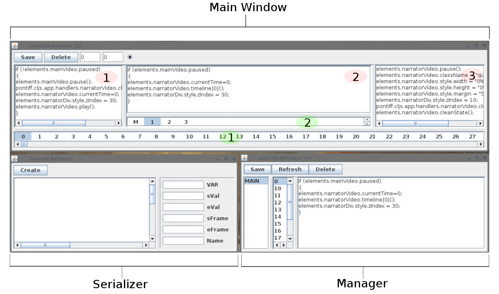

Simple Skinning / Dom Linkage
Perfectly Elastic Interface
DOM Scraping/Event Handler Auto-build
Serial-Synchronized Media Streams
Basic Typing Animation
The Prototype is a Work in Progress.
Look at the Concept Proofs for Samples.
Managing State
An Approach to Synchronized Web Animation
In this posting, I am going to explain how to build a state management system in Javascript using the Clojure dialect. If you are looking to build an in-browser game or synchronize animations with one or more media streams, and you find that your design does not conform well to the expectations of a game-engine or framework--almost always the case for me, for some reason--then this is for you.
I am going to take a different approach here. And if you follow along, you might sometimes feel as if you were drinking from the proverbial firehose. But there is a payoff to losing oneself, for a time, in the incredibly rich development environment that a modern computer language and a modern web browser provide. Because the fact is, you don't need that framework, and you don't need that game engine...whichever ones you are thinking of. If you have the horses, just stick with the language. That is where the power is.
CHAPTER 1: Modifications to the standard environment.
The need to more fully embrace the animation potential of the browser is what will drive this. Browser animation encompasses two distinct paradigms: time-based animation and frame-based animation, and you need them both. The problem is that, as your animations become more complex, if you don't set the right foundation, you will find yourself spending an ever-larger portion of your time just working to reconcile the differences between these two animation approaches. That is to be avoided.
The project I am going to describe is a work in progress. It synchronizes two media streams with each other and with animated DOM and SVG elements. And all of that subordinates to a number of event handlers. Think interactive television.
Choosing the Right Tool:
Before I get into the technical stuff, I want to make a point of a lesson I first learned, after much self-inflicted suffering. It is that animation intended to render as a media stream plays needs to be frame-based. The temptation, in that case, is to use the powerful time-based animations available with CSS and SMIL, and in many other cases, this is the way to go. But in this case, the fact that neither CSS nor SMIL allows you to step through an animation, when you need to, makes them increasingly unwieldy as the build proceeds. With that in mind, let's get started.
Step 1:
I normally create an "elements" object as a central repository for javascript references to DOM objects. So when you see notation like "elements.mainVideo," just know that such is referring to a DOM object named "mainVideo."
To begin, attach two arrays to your each media stream to which you will be syncing as follows:
(set! Elements.mainVideo.timeline (array)) (set! Elements.mainVideo.stateMap (array))
The timeline array sparsely will contain an index with a numeric value equal to the sequence number of a time-interval in your media stream e.g., a single frame number from a video. By the way, it does not have to be a media stream, you could apply this technique to other kind of programmatic progressions, as well. But in any case, on each new frame/interval of our media stream, we are going to check to see if our timeline contains some code to execute, and if there is, requestAnimationFrame will call it for us.
The stateMap array is the key element here. It will contain an N X 2 vector where, for each index V, V[0] will provide a function to setup the context in which a corresponding timeline function will execute, and V[1] will provide code to undo any setup done by V[0]. Then, at the head of every function in the timeline, we will provide a state check mechanism. In javascript it looks like:
var state = [1, 0, 0];
for ( var i = 0; i < state.length; i++)
{
if ( state[i] != elements.mainVideo.state[i])
elements.mainVideo.stateMap[i][state[i]]();
}
elements.mainVideo.state = state;
...
*In just a bit, I'll describe a simple pre-processor that will take care of the state management and much of the required code generation
Managing state, in this way, allows requestAnimationFrame to efficiently determine, at every step of play, how things need to be in order to execute a corresponding timeline function. And there is no need to worry about any frame skip or random seeking. The logic to recalibrate the system is embedded in the stateMap and automatically executed by the timeline.
VIDEO: AN APPROACH TO STATE MANAGEMENT
The last step is to setup requestAnimationFrame. Here is the Clojurescript code that does that.
(def FPS 15)
(set! (. elements.mainVideo -onplay)
(fn []
(this-as this
(set! (. this -timeStamp) (- (. this -currentTime) (/ 1 FPS)))
(set! (. this -requestId) (.. this -doFrame fire)))))
This code attaches a function to the video's onplay attribute which does just two things: 1) records the video's currenTime to a time stamp for future reference, and 2) calls the video's "doFrame" function.
The doFrame function setup looks like this:
(let [ doFrame
(fn [ ctxt ]
(this-as this
(set! (. this -fire)
(fn []
(if (> (- (. ctxt -currentTime) (. ctxt -timeStamp)) (/ 1 FPS) )
(let [ time (. ctxt -currentTime)
frame (js.Math.round (* FPS time))
frameSet (aget (. elements.mainVideo -timeline) frame) ]
(set! (. ctxt -timeStamp) time)
(if frameSet
(frameSet)
(do
(.forEach elements.mainVideo.state
(fn [ el idx arr ]
(if-not ( = 0 el)
(do
((aget (aget elements.mainVideo.stateMap idx) 0))
(aset arr idx 0)))))))))
(set! (. ctxt -requestId) (js.requestAnimationFrame (. this -fire)))))
this)) ]
(set! (. elements.mainVideo -doFrame) (doFrame. elements.mainVideo)))
This is the function that will be called whenever the media stream is played, and this is what requestAnimationFrame will call as it cycles. It first compares the currentTime of the media stream to a previously recorded time stamp, and when the span of a frame has passed, if there is a function on the timeline that corresponds to the current frame, it will be executed--remember the first lines of that function will make sure state is what it needs to be for the code to execute.
If there is no function on the timeline, then doFrame will verify that the system is in a ground state. This is done by looking at elements.mainVideo.state, and if that array has any active state--an index is 1 and not zero--then it will evoke the takedown for that state found in the corresponding stateMap array.
The last code to attach to the stream is as follows:
(set! (. elements.mainVideo -onpause)
(fn []
(this-as this
(if (. this -requestId)
(do
(js.cancelAnimationFrame (. this -requestId))
(set! (. this -requestedId) nil))))))
set! (. elements.mainVideo -onended)
(fn []
(this-as this
(if (. this -requestId)
(do
(js.cancelAnimationFrame (. this -requestId))
(set! (. this -requestedId) nil))))))
These two functions are there to make sure that reqestAnimationFrame is turned off when the stream is not playing.
And that is all you need to get started.
CHAPTER 2: BEFORE THE PRE-PROCESSOR
A big advantage that goes with using the above technique is that everything in the DOM is addressable at any time. So not only can you animate css style attributes, you can animate/modify ANYTHING you can reach with Javascript as the timeline is executed. So before I explain the pre-processor, I want to quickly describe a couple of approaches that I examined before I started to build a prototype.
The first approach I looked-at was an HTML canvas based approach. To examine this option, I used Blender to create some key-framed animations and then exported them to a three.js JSON file. Then, it was simply a matter of rendering the blender-created geometries to an HTML canvas and calling their morph-targets, as needed, from the timeline. The timeline setup I've described dovetailed seamlessly with this tool-chain, but I found, for what I wanted to do, that an SVG canvas was better suited.
As SVG elements are, almost without exception, as accessible to the programmer as any other kind of DOM element, their animation, via the above approach, is very straight-forward and highly customizable. Browsers can use the GPU to render SVG, I am told, so performance is optimal, and SVG files can be even more dense than a three.js JSON file, so network bandwidth considerations usually are a push. The cherry on top is due to how accessible the DOM is to us when we use this timeline setup. For example, if you have a simple morphing animation you want to make, since you can directly modify the "d" or "transform" attribute of an SVG path from the timeline, you can, with a single, short line of code achieve what would take much more time if you were to first build a keyframe animation in Blender, then exported it to three.js to render to your HTML canvas. Lastly, as everyone knows, it is easier to work with event listeners on SVG objects than event listeners on canvas pixels
The last thing I want to explain, before we get to the pre-processor, is why I say this approach is like drinking from the proverbial fire-hose. Unlike the case with a framework, no upfront choices are made for us when we use this approach. So when you start a project, you have to lay a good foundation because your options can be overwhelming and a wrong choice can entangle you later on. Some developers equate manifold options with expressive potential, and that is their preference. But the tradeoff is that no-one gives you a pre-determined path to follow. You have to chart that yourself. If that isn't your cup of tea, don't use this approach. You have been warned.
CHAPTER 3: THE PRE-PROCESSOR
When you use the above technique, you can greatly facilitate your coding by using a pre-processor. The one I built is on Github here. I used Clojure with the Enlive and Seesaw libraries. I am using it here just as an example. It works fine for my needs, but it is hasty, hasty pudding. I refer to it here to illustrate an approach, not to suggest its use.
The main window of the application uses three text panes and two listboxes. List box number 1 refers to the frames in a timeline to which you want to sync your animations. As you scroll through this box's elements, the panes above change as follows:
Text pane 1 changes to show the state setup code, if any, that corresponds to the frame you are on.
Text pane 2 changes to show the unique code, if any, that requestAnimationFame will execute at this frame.
The state check code I mentioned previously will be calculated by the processor and automatically inserted just prior to this code when you click on Save and the processor generates the timeline.js and stateMap.js javascript files.
Text pane 3 changes to show any takedown code that will be executed whenever the system determines that the state created by the code in pane 1 is no longer current.
Finally, list box 2 shows the state that corresponds to the frame on which list box 1 is rested.
Methods do exist to edit, save, create, and delete but they are not here explained.
VIDEO: USING A PRE-PROCESSOR
The serializer window provides a single step means of creating an animation sequence and inserting it into the timeline. Insert the javascript code that provides the basis of your animation, but instead of inserting a real value into the function, leave a proxy, e.g,. "X" and record that fact in the "VAR" pane. Then provide a start and end value for X and the frames on which you want the progression to take place. An easing function calculator is needed here.
When you press create, the processor will insert a function at each step of the timeline in the range you give with an X value calculated to fit that range.
The manager window lets you edit, delete and view the individual animations you created with the serializer window and any others you modified/created in the main Window.
So that is the idea of the pre-processor. Much work could be done in this area to further increase productivity and capability. But even this basic example saves a lot of time when using these techniques.
CHAPTER 4: THE END
That is it in a nutshell. You can view what I have so far, by way of a prototype, at http:///. And you can see the code base at http://github. Also watch the video introduction to the prototype at http://.